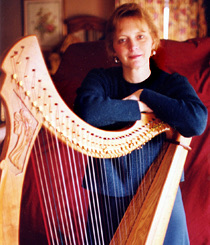
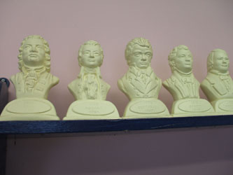
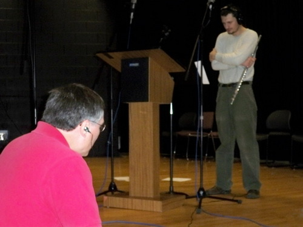
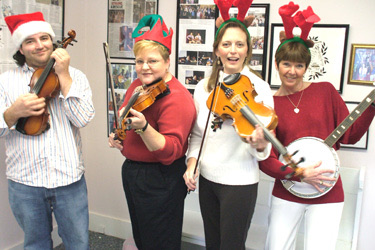
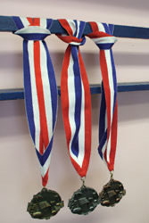

Piano
The studio's foundation since 1980. Traditional classical technique and theory, from first lessons to recital pieces.
Harlan, Kentucky · Founded 1980
Private and group lessons for children and adults in piano, voice, violin, guitar, flute and Celtic harp. Solid classical technique, with real respect for Appalachian folk music and playing by ear.
Students perform in studio recitals each year. December 2017 marked the studio's 38th year of recitals.
Lessons
Each teacher makes sure the instrument and the lesson content suit the student in front of them, whether that is a beginner or a returning adult.
The studio's foundation since 1980. Traditional classical technique and theory, from first lessons to recital pieces.
Beginning voice lessons. Voice students share the recital stage with the studio's pianists.
Part of the string program since about 1990, with room for traditional fiddle tunes next to the classics.
Added to the curriculum in 2001, taught with the same solid grounding in technique and theory.
Flute is one of the instruments taught at the studio. Call to ask about current lesson times.
Lever harp, Clara Atkins-Pope's own instrument since around 1990. She has composed and recorded original works for it.
Cello, viola and other folk instruments have also been taught at the studio. See all lessons or call to ask what is available this season.
Getting started
Call 606-573-4994 or send the short form below. Tell us the instrument and who the lessons are for.
Agree on a teacher and a weekly lesson time at the studio on Howard Street.
Learn at your own pace, earn memorization awards and play in the studio recitals.

Our studio
Clara Atkins-Pope was born in Harlan County, at the head of Catrons Creek. After earning a Bachelor of Arts with a music major at Centre College, she came home and opened The Studio of Piano Fine Arts the following autumn.
“A child of the mountains she was and remains.”
Lessons use solid traditional classical technique and theory, and give real respect to the tradition of playing by ear, improvisation and the folk music of Appalachia: traditional fiddle and Celtic tunes. Clara Atkins-Pope and Ryland Pope teach as master instructors, joined by teachers trained in the studio's own curriculum.
Recitals & awards
Memorized performance is at the heart of the studio. Students work toward real goals and play for a real audience.

Students earn awards for the music they memorize within one year. The first level is a statue of a composer; bronze, silver and gold medals follow.
In 2017 the studio held its 38th year of recitals at the SKCTC Harlan campus auditorium: an afternoon recital for piano and voice students and an evening recital for the violinists.
Started in 1996 to meet the demand for beginning piano lessons in Harlan. Accomplished high-school musicians trained at the studio teach beginners and attend a weekly apprentice class. A College Intern Program followed in 2002.
Founded by the studio in 1993. The festival places the traditional music of the Appalachian Mountains alongside the music of the classical masters, with guest performers from colleges and universities and workshops for young musicians.
From the studio



Photos from the studio's own earlier website, courtesy of Tom Pope.
Questions
Piano, voice, violin, guitar, flute and Celtic (lever) harp. Cello, viola and other folk instruments have also been taught at the studio. Call 606-573-4994 to ask what is available this season.
Both. The studio offers private and group music lessons to children and adults.
The studio was founded in 1980 by Clara Atkins-Pope. Clara Atkins-Pope and Ryland Pope are master instructors, together with teachers trained in the studio's own curriculum.
Lessons use solid traditional classical technique and theory, while respecting playing by ear, improvisation and the folk music of Appalachia, such as traditional fiddle and Celtic tunes.
Students can earn awards for memorizing music within a year: a statue of a composer for 250 or more measures, and a bronze medal for 500 or more measures, with silver and gold levels above that.
At 102 Howard St, Harlan, Kentucky 40831. Students come from Harlan and the surrounding counties.
Contact
Call the studio or send the form. It opens a ready-made email to the studio with your details.